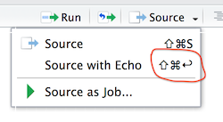

Chapter 4 Docker, Postgres, and dvdrental setup
(the links may not be working correctly yet…)
4.1 Docker setup
Verify that Docker is up and running.
4.2 Bring up Postres in Docker
There’s a lot to learn about Docker and many uses for it, here we just cut to the chase.
- Use ./src/1_test_postgres-b.R to demonstrate that you have a persistent database by uploading
mtcarsto Postgres, then stopping the Docker container, restarting it, and finally determining thatmtcarsis still there. (Note that if you are running Postgres locally, you’ll have to close it down to avoid a port conflict.) See the results here: ./src/1_test_postgres-b.md
Note: when running the scripts in this repo, there’s a difference between “sourcing” a file and “source with echo”. Use “source with echo”:

4.3 DVD Rental database installation
Download the backup file for the dvdrental test database and convert it to a .tar file with:
./src/2_get_dvdrental-zipfile.Rmd. See the results here: ./src/2_get_dvdrental-zipfile.md
Create the dvdrental database in Postgres and restore the data in the .tar file with:
./src/3_install_dvdrental-in-postgres-b.Rmd. See the results here: ./src/3_install_dvdrental-in-postgres-b.md
4.4 Verify that the dvdrental database is running and browse some tables
Explore the dvdrental database:
./src/4_test_dvdrental-database-b.Rmd See the results here: ./src/4_test_dvdrental-database-b.md
Need to incorporate more of the ideas that Aaron Makubuya demonstrated at the Cascadia R Conf.